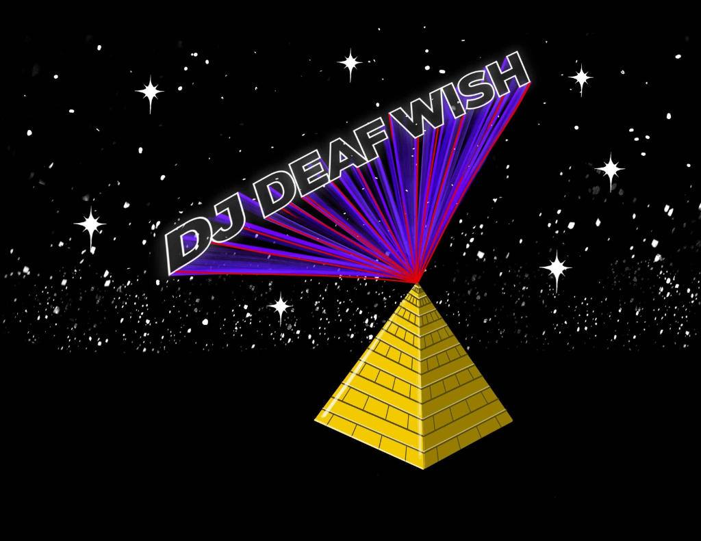

Featured Stage Headliner
Live Electronic Performance

DJwish (Nate Hergert)
Universal Music Design // Deaf Sonic Agency
Up front on the CymaSpace stage, Portland electronic musician and Deaf advocate Nate Hergert (DJ Deaf Wish) presents a live performance focused on deep sub-bass resonance and physical impact. Pairing visceral low-end sound design with live sound-reactive visual arrays, DJwish reframes club culture as an immersive physical and visual art form accessible to Deaf and hearing audiences alike.
Live electronic performance paired with real-time audio feeds to attendee haptic vests.